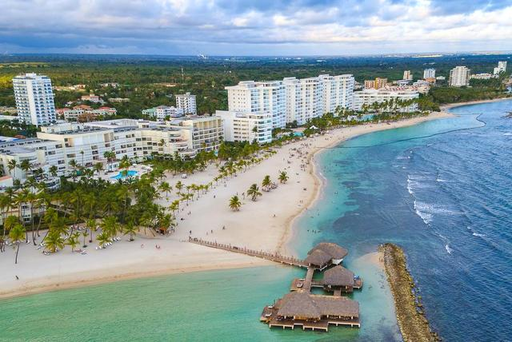

Главная
Всё что здесь написано - это история нашей любви...
История любви Николая и Анны.
На этом сайте можно почитать о нас, узнать, по какой причине мы оказались в Доминикане, увидеть наши фотографии и виды этой страны. Надеемся, что вы сможете почерпнуть здесь что-нибудь полезное для вас. В меню слева читайте о наших доминиканских историях, о том, как мы поженились в Доминикане, о местной манере вождения, о поисках работы, способах получения ВНЖ и подключения интернета...
Ни в коем случае не стоит рассматривать наш сайт как рекомендации
или советы для тех,
кто хочет переехать в Доминикану. Наша эмиграция сюда была, в некоторой мере, вынужденной и,
одновременно, авантюрной. Мы просто описываем случаи, которые
происходили с нами, как нам приходилось адаптироваться к местной
жизни, и это вовсе не значит, что ваша жизнь будет похожей на
нашу...
Но какое-то представление о Доминикане у вас должно сложиться.
А если вы прочтёте ответы на
пять основных вопросов, то вам многое станет понятным для принятия того или иного
решения.
Прекрасный
климат круглый год, либеральное законодательство, позволяющее легко
получить вид на жительство, стабильная политическая ситуация - всё
это не может не привлекать. Но есть и свои минусы - отсутствие
работы, высокие цены и налоги на товары, высокая стоимость обучения
в платных школах. Поэтому, прежде чем отправиться строить своё
будущее, начитавшись на рекламных сайтах о прелестях чудесной жизни
на райском острове - попытайтесь представить, кем вы видите себя
здесь, чем сможете заниматься, на какие средства существовать.

Обращение к читателям
Автор снимает с себя всю ответственность за принятие читателями
тех или иных решений после посещения данного сайта. Наши истории
даны только для информационного восприятия. Здесь описана только
наша жизнь; ваша может быть совсем другой.
Сайт был начат в 2005 году, когда мы прилетели в Доминикану.
Также наши новости о доминиканской жизни вы можете увидеть
на наших блогах:
Помощь Анне и Николаю
Если у вас есть желание и возможность поддержать нас материально
- мы будем благодарны любой помощи! Это можно сделать через номер карты:
4594130033400978 или систему
PayPal.
Либо у вас есть более удобный для вас способ поддержать нас.
Огромное спасибо за помощь всем неравнодушным к нашей судьбе людям!